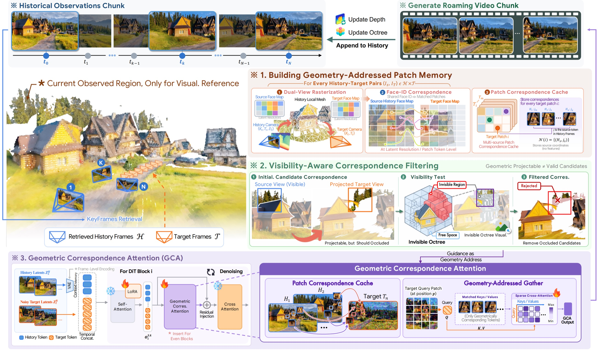

Geometry as Address: Routing Attention to Visual Memory for Long-Horizon Camera-Controlled Video Generation
Gallery
Given a single image and a text prompt, GEAR generates minute-long, photorealistic videos along arbitrary user-specified camera trajectories, while preserving spatial consistency and faithfully recovering previously observed content upon revisitation.
Motivation
- History-based implicit methods retain historical latents as memory and retrieve relevant observations via attention, but the growing context makes dense historical attention increasingly expensive and susceptible to irrelevant tokens.
- Reconstruction-based explicit methods fuse historical observations into a global 3D representation for target-view reprojection, but accumulated geometry errors and cross-view inconsistencies can introduce persistent artifacts such as duplicated surfaces, floaters, and geometric drift that contaminate subsequent generations.
- These limitations motivate using geometry as a visual-memory address rather than the memory itself, leveraging local historical-to-target correspondences without relying on globally consistent reconstruction.
- Based on this insight, we propose GEAR, a Geometry-Enabled Attention Routing framework that establishes per-frame source-target correspondences from estimated depth and uses Geometric Correspondence Attention to sparsely route each target token to geometrically matched historical memory during denoising.
Method
We propose GEAR, a Geometry-Enabled Attention Routing framework for camera-controlled long-horizon interactive video generation. Instead of globally fusing estimated geometry, GEAR uses the depth of each historical frame independently to establish source-target correspondences under future viewpoints, and stores the patch-level relationships in a lightweight cache. Our Geometric Correspondence Attention (GCA) then exposes each noisy target token only to its geometrically matched historical memory tokens as keys and values, and injects the aggregated features through a residual branch during denoising. Geometry thus explicitly determines where each target token can retrieve visual evidence, introducing a sparse, explicitly geometry-addressed pathway for long-term memory access.
Rather than requiring the video model to search the entire history or the geometry estimator to reconstruct the entire world, GEAR uses geometry to identify which pieces of history are relevant to each piece of the future.
We additionally introduce an Invisible Octree that incrementally accumulates visibility evidence along the generation trajectory and filters geometrically plausible but occluded correspondences.

System overview. For each target chunk, GEAR constructs patch correspondences to retrieved history using per-frame geometry and filters occluded matches with the Invisible Octree. GCA then injects matched historical features into noisy target tokens during denoising, after which generated observations are appended to the history bank for continued rollout.
We illustrate how the local geometry of each history condition is used to establish a history-to-target patch correspondence cache at the latent resolution. Our Geometric Correspondence Attention then restricts each noisy target token to attend only to its geometrically matched historical memory tokens as keys and values, and injects the aggregated features through a residual branch during denoising, as illustrated in the pipeline figure.
Qualitative Comparisons for Minute-Long Generation under Challenging Camera Trajectories
We present one-minute videos generated by different methods under a challenging camera trajectory involving rapid motion and continuous rotation. The Reference visualizes the geometry corresponding to the first frame projected along the target camera trajectory, serving as a reference for camera motion. Our GEAR maintains high visual fidelity and scene consistency throughout the extended trajectory, whereas competing methods suffer from progressive drift and visual degradation.
Qualitative Comparisons for DL3DV-Evaluation
We present inference results on DL3DV-Evaluation. Given the first-frame image and the corresponding camera trajectory as input, each method generates a video following the specified camera motion. We additionally compare the camera trajectories estimated from the generated videos using ViPE against the ground-truth trajectories. GEAR preserves visual quality, camera adherence, and scene consistency throughout long-horizon generation.
To reduce storage requirements, we downsample the generated videos by a factor of 2 in both spatial resolution.
Qualitative Comparisons for World-Score
We generate a set of closed-loop camera trajectories to evaluate the long-horizon revisitation ability of each model. Since each trajectory returns to previously observed viewpoints, a model with consistent memory should reproduce the same scene content when the camera revisits it.
To reduce storage requirements, we downsample the generated videos by a factor of 2 in spatial resolution.
Rebuttal Results
Additional results provided during the discussion phase, grouped by reviewer.
Reviewer Kt4x
Four-step DMD Acceleration
We additionally apply Distribution Matching Distillation (DMD) to distill GEAR into a 4-step bidirectional generator, while retaining the same geometry-addressed memory modules. Combining few-step denoising with CFG removal achieves a 12.6× denoising speedup, with comparable camera accuracy and revisit consistency. We further directly reduce the original model to 4 denoising steps without additional distillation; previously observed regions remain faithfully reconstructed, despite some loss of fine-grained details.
Dynamic Scene Generation
GEAR, trained exclusively on static scenes, extends to dynamic scenes without any fine-tuning. We segment the dynamic object with Segment Anything and remove its geometric correspondences from the cache, so that the object no longer reads historical memory and is synthesized by the pretrained backbone under a dynamic text prompt, while the static background still retrieves its geometrically matched memory. Manipulating the removed region or the object's correspondence addresses further enables training-free motion control.
Case 1Dynamic Object Generation
The van is excluded from the correspondence cache, and the prompt describes it driving away. The van drives along the road, while the canyon and the road remain consistent with the memory as the camera moves. Black regions in the correspondence map receive no historical memory and are synthesized by the backbone.
Case 2Dynamic Object Control
Same history and camera trajectory under four settings. Top: generated video. Bottom: geometric correspondence (black: no correspondence).
- (a) Static Default setting: all correspondences are kept, and only the camera moves.
- (b) Dynamic Prompt Only the prompt is changed; the cow moves locally but stays anchored at its original location.
- (c) Moving Mask The cow is masked and the mask is manually moved; the cow follows the mask.
- (d) Moving Object The cow's correspondence addresses are shifted along a prescribed trajectory, yielding more coherent and controllable motion.
Reviewer oN6p
Ablation with Explicit Camera Conditioning
We introduce explicit pose conditioning by training a camera adapter alongside GCA. Explicit pose conditioning provides no further improvement, demonstrating that GCA alone provides effective spatial guidance without requiring additional pose-conditioning modules.
Ablation with Warped Condition
We replace GCA with target-view point-cloud renderings obtained through global fusion and reprojection, injected via channel-wise concatenation. Noisy reprojections arising from cross-view geometric inconsistencies degrade subsequent generations.
Reviewer RiBP
Correspondence Construction with Per-Frame Local Geometry
GEAR constructs history-to-target correspondences exclusively from independent per-frame local geometry. Specifically, we back-project the depth map of each historical condition to construct a local mesh, which is subsequently rasterized into target views to establish pairwise token-level correspondences.
Ablation with Warped Variant
We additionally trained a warped-conditioning variant of GEAR with the global 3D fusion and reprojection pipeline. Cross-view geometric inconsistencies introduce persistent 3D floaters after global fusion, which are subsequently reprojected as noisy pixel-aligned conditions and degrade generation quality. We also visualize GEAR's global Invisible Octree and visible mesh to clarify their roles as coarse visibility proxies for identifying unobserved regions, which are subsequently updated using newly generated frames.